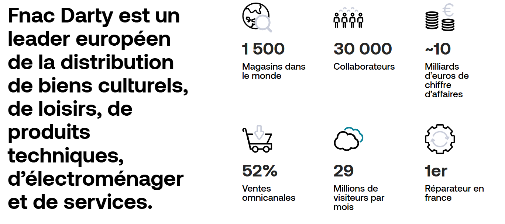

Présentation
À propos de moi
Nom
Esnault Alexis
Formation
BTS SIO option SLAM
Baccalauréat (2023)
Spécialités : Mathématiques, Littérature Anglais, NSI
Compétences principales
Développement web, gestion de projet, bases de données...
un truc
Passionné par les nouvelles technologies depuis mon plus jeune âge, j'ai développé une approche intuitive et stimulante de cet univers. Mon intérêt pour la programmation a débuté avec des outils comme Scratch et des projets robotisés, avant de s'étendre à des langages plus complexes
Le BTS SIO est pour moi la voie idéale : il me permet d'allier une base théorique solide à la réalité du terrain. Grâce à l'alternance, je saisis l'opportunité concrète de mettre mes compétences au service de mon organisation tout en enrichissant quotidiennement mon expertise technique.
Qu'est ce que le BTS SIO ?
Avant de commencer à parler de moi, je vous propose de présenter en premier lieu ma filière dont je suis affecté
Le Brevet de Technicien Supérieur aux Services Informatiques aux Organisations (BTS SIO), s'adresse à ceux qui souhaitent se former en deux ans aux métiers d'administrateur réseau ou de développeur. Pour par la suite intégrer directement le marché du travail ou continuer des études, dans le domaine de l'informatique.
Le BTS SIO propose deux spécialités :
Mon entreprise
Présentation
Darty est une enseigne spécialisée dans la distribution d'électroménager, d'électronique grand public et dans la fourniture de services associés (installation, garantie, SAV). Après son integration au groupe Fnac Darty, la marque met l'accent sur la qualité du service client et la confiance.
Histoire récente
Depuis son rapprochement avec Fnac en 2016, Darty a poursuivi une stratégie omnicanale : renforcement du réseau de magasins, amélioration du site e‑commerce, développement du click & collect et déploiement d'offres de services comme Darty Max et des programmes de reprise/reconditionnement.
Chiffres clés & présence
En 2023, le groupe affiche environ 8 milliards d'euros de chiffre d'affaires. En France, Darty est présent par plusieurs centaines de magasins et un important service après‑vente national, avec une base clients significative utilisant les services numériques et abonnements.
Services & engagements
Offres principales : vente en magasin et en ligne, livraison et installation à domicile, extension de garantie, SAV et abonnement Darty Max. Engagements : réduction des déchets, recyclage, promotion de l'économie circulaire (reconditionnement), et amélioration de la durabilité des produits.
Perspectives & innovations
Axes stratégiques : améliorer l'expérience omnicanale, développer les services à valeur ajoutée (abonnements, maintenance prédictive), accroître le reconditionnement et optimiser la logistique pour réduire délais et empreinte carbone.
